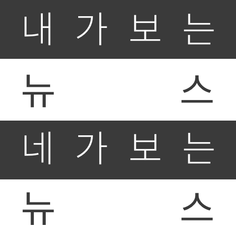

뉴스피드 분석하기
우리가 살고 있는 반쪽짜리 세상
인터렉티브 기사 | 버블에 갇힌 사회
ABOUT
HOME

[뉴스피드 분석하기]가 무엇인가요?
뉴스피드에는 내 담벼락과 달리 친구나 좋아요한 페이지의 글이 올라옵니다. 어떤 글이 먼저 보일지는 사용자 의지가 아닌 페이스북 알고리즘에 의해 선택됩니다.
당신의 뉴스피드에서 뉴스는 얼마나 많이 보일까요? 그 뉴스를 전달한 매체는 어딜지, 이 매체의 소식에 제일 많이 호응한 친구는 누군지 확인해보세요.
[시크릿모드에서는 익스텐션이 작동하지 않습니다]
엄마야... 잠깐만요!
정확한 테스트 결과를 위해 간단한 [크롬 익스텐션 설치]와
[페이스북 로그인]이 필요합니다.
익스텐션 설치시 추후 분석에 걸리는 시간을 단축하기 위해
페이스북 접속시마다 상위 20개 포스트 정보를 수집합니다.
수집된 정보는 안전하게 보호되니 걱정마세요!
[시크릿모드에서는 익스텐션이 작동하지 않습니다]
당신의 뉴스피드를 분석중입니다.
정확한 결과를 위해 최대 1분 정도 소요될 수 있습니다.